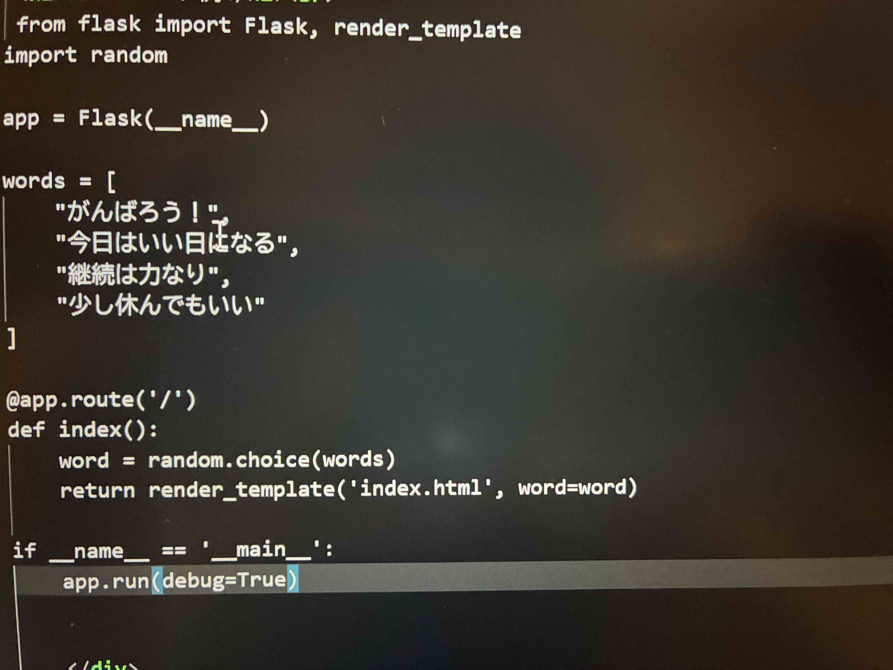

flaskとは
Flaskとは、PythonでWebアプリケーションを開発するための
軽量なマイクロフレームワーク。
Djangoのような多機能フレームワークは、認証機能・管理画面・ORMなどが最初から一通りそろっている反面、
構成が大きくなりやすく、シンプルなアプリやAPI開発では「やや重い」と感じられることがある。
また、フレームワークの規約に沿った設計が前提となるため、開発の自由度はやや下がり、
初学者は学習コストが高く感じることも珍しくない。
一方でFlaskは、必要な機能だけを後から追加できるため、
小規模なWebアプリやAPI、プロトタイプ開発に向いているという強みがある。
flaskコード例

参考
Flaskとは?Python初心者でもわかる特徴・できることを解説